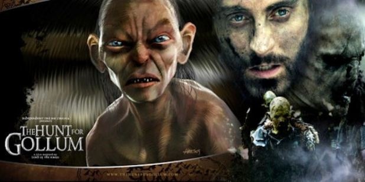
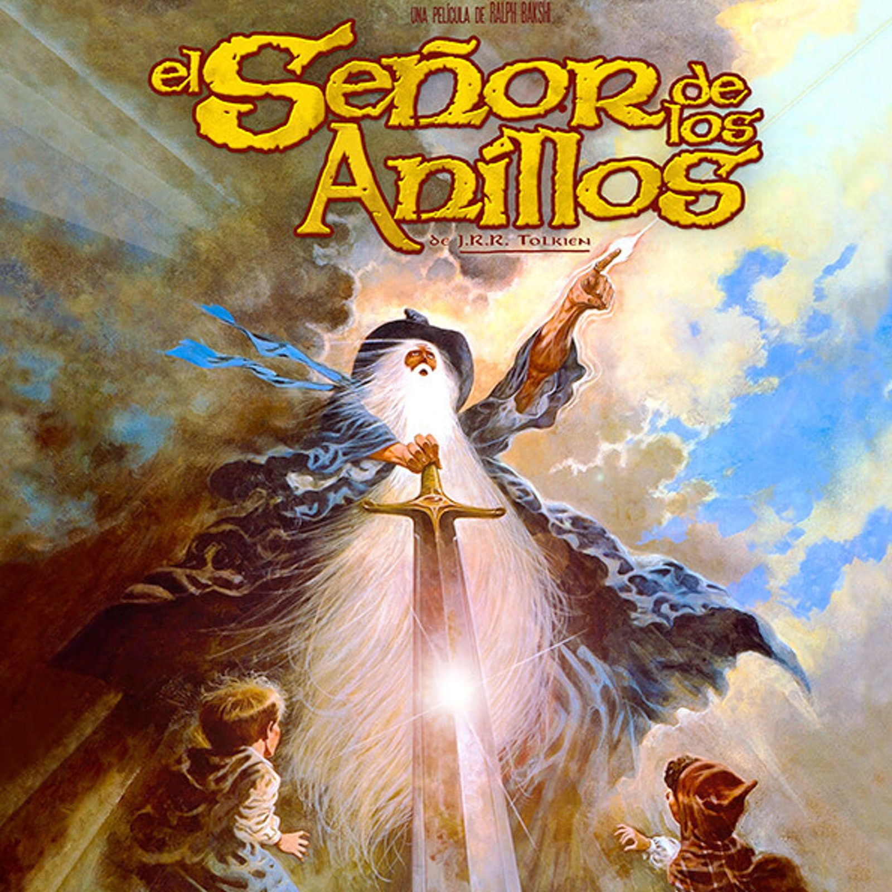
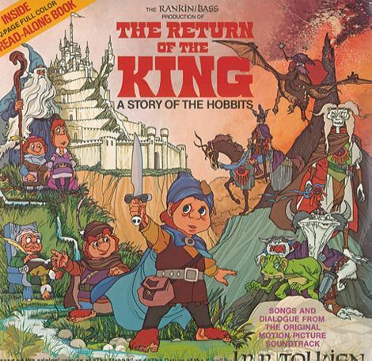

La comunidad del anillo: Esta pelicula fue estrenada el 21 de Diciembre del 2001.Fue dirijida por el director Neozelandés Peter Jackson.Lugar de filmación: Nueva ZelandaPresupuesto: 93 millones de USDRecaudación: 897,7 millones de USDPremios: 4 premios OscarReparto principal: Elijah Wood (Frodo), Ian McKellen (Gandalf), Viggo Mortensen (Aragorn), Sean Astin (Sam), Billy Boyd (Pippin), Dominic Monaghan (Merry), John Rhys-Davies (Gimli), Orlando Bloom (Legolas), Sean Bean (Boromir).
2.- Las dos torres
Las dos torres: Esta pelicula fue estrenada el 02 de Enero del 2003.Fue dirijida por el director Neozelandés Peter Jackson.Lugar de filmación: Nueva ZelandaPresupuesto: 94 millones de USDRecaudación: 947,5 millones de USDPremios: 2 premios OscarReparto principal: Elijah Wood (Frodo), Ian McKellen (Gandalf), Viggo Mortensen (Aragorn), Sean Astin (Sam), Billy Boyd (Pippin), Dominic Monaghan (Merry), John Rhys-Davies (Gimli), Orlando Bloom (Legolas), Andy Serkis (Gollum), Bernard Hill (Théoden), Miranda Otto (Éowin), Karl Urban (Éomer), David Wenham (Faramir).
3.- El retorno del rey
El retorno del rey: Esta pelicula fue estrenada el 17 de Diciembre del 2003.Fue dirijida por el director Neozelandés Peter Jackson. Lugar de filmación: Nueva ZelandaPresupuesto: 94 millones de USDRecaudación: 1146 millones de USDPremios: 11 premios OscarReparto principal: Elijah Wood (Frodo), Ian McKellen (Gandalf), Viggo Mortensen (Aragorn), Sean Astin (Sam), Billy Boyd (Pippin), Dominic Monaghan (Merry), John Rhys-Davies (Gimli), Orlando Bloom (Legolas), Andy Serkis (Gollum), Bernard Hill (Théoden), Miranda Otto (Éowin), Karl Urban (Éomer), David Wenham (Faramir), John Noble (Denethor).
Trilogías del hobbit
4.- Un viaje inesperado
Un viaje inesperado: Esta pelicula fue estrenada el 13 de Diciembre del 2012.Fue dirijida por el director Neozelandés Peter Jackson.Lugar de filmación: Nueva ZelandaPresupuesto: 180 millones de USDRecaudación: 1017 millones de USDPremios: 0 premios Oscar, 2 premios EmpireReparto principal: Martin Freeman (Bilbo), Ian McKellen (Gandalf), Richard Armitage (Thorin escudo de roble), Ken Stott (Balin), Billy Boyd (Pippin), James Nesbitt (Bofur), John Rhys-Davies (Gimli), Orlando Bloom (Legolas), Andy Serkis (Gollum), Graham McTavish (Dwalin), William Kircher (Bifur), Stephen Hunter (Bombur), Dean O'Gorman (Fíli),
Aidan Turner (Kíli), John Callen (Óin), Peter Hambleton (Glóin), Jed Brophy (Nori), Mark Hadlow (Dori), Adam Brown (Ori), Jeffrey Thomas (Thrór).
5.- La desolación de Smaug
La desolación de smaug: Esta pelicula fue estrenada el 12 de Diciembre del 2013.Fue dirijida por el director Neozelandés Peter Jackson.Lugar de filmación: Nueva ZelandaPresupuesto: 225 millones de USDRecaudación: 959 millones de USDPremios: 0 premios Oscar, 2 premios EmpireReparto principal: Martin Freeman (Bilbo), Ian McKellen (Gandalf), Richard Armitage (Thorin escudo de roble), Ken Stott (Balin), Billy Boyd (Pippin), James Nesbitt (Bofur), John Rhys-Davies (Gimli), Orlando Bloom (Legolas), Andy Serkis (Gollum), Graham McTavish (Dwalin), William Kircher (Bifur), Stephen Hunter (Bombur), Dean O'Gorman (Fíli),
Aidan Turner (Kíli), John Callen (Óin), Peter Hambleton (Glóin), Jed Brophy (Nori), Mark Hadlow (Dori), Adam Brown (Ori), Jeffrey Thomas (Thrór), Benedict Cumberbatch (Smaug).
6.- La batalla de los cinco ejercitos
La batalla de los 5 ejercitos: Esta pelicula fue estrenada el 11 de Diciembre del 2014.Fue dirijida por el director Neozelandés Peter Jackson.Lugar de filmación: Nueva ZelandaPresupuesto: 250 millones de USDRecaudación: 962,2 millones de USDPremios: 0 premios Oscar, 4 premios SaturnReparto principal: Martin Freeman (Bilbo), Ian McKellen (Gandalf), Richard Armitage (Thorin escudo de roble), Ken Stott (Balin), Billy Boyd (Pippin), James Nesbitt (Bofur), John Rhys-Davies (Gimli), Orlando Bloom (Legolas), Andy Serkis (Gollum), Graham McTavish (Dwalin), William Kircher (Bifur), Stephen Hunter (Bombur), Dean O'Gorman (Fíli),
Aidan Turner (Kíli), John Callen (Óin), Peter Hambleton (Glóin), Jed Brophy (Nori), Mark Hadlow (Dori), Adam Brown (Ori), Jeffrey Thomas (Thrór), Luke Evans (Bardo).
Fans film de la tierra media (Mundo expandido)
7.- La caza de gollum

La caza de Gollum, es un fan film estrenado el 03 de mayo del 2009.Fue dirigida por Chris Bouchard.Esta pelicula esta basada en elementos de la novela de fantasía épica El Señor de los Anillos, del escritor británico J. R. R. TolkienSu acción tiene lugar diecisiete años después de la fiesta del 111 cumpleaños de Bilbo y justo antes de que Frodo Bolsón deje la Comarca de camino a Rivendel (3009 T. E.)
8.- Nace una esperanza
Nace una esperanza, es un fan film estrenado el 2009.Fue dirigida por Kate Madison.Esta pelicula esta basada en elementos de la novela de fantasía épica El Señor de los Anillos, del escritor británico J. R. R. TolkienRetrata hechos y personajes brevemente esbozados en el Apéndice A de esta última: la historia de Arathorn y Gilraen, los padres de Aragorn, uno de los protagonistas de El Señor de los Anillos, último descendiente del linaje de Elendil y único heredero legítimo de los tronos de Arnor y Gondor
Peliculas animadas de JRR Tolkien
9.- El señor de los anillos I animado

El señor de los anillos, es una pelicula estadounidense estrenada en 1978.Fue dirigida por Ralph Bakshi.Esta pelicula esta basada en el libro El Señor de los Anillos, del escritor británico J. R. R. Tolkien.Tiene una duracción de 133 minutos y fue la primera adaptación del libro el señor de los anillos.La pelicula solo se basa en el primer libro la comunidad del anillo y parte del segundo libro las dos torres.A pesar que se tenía pensado rodar una secuela que adaptara lo que quedaba del segundo tomo y el tercer y último libro El retorno del Rey, esto en un primer momento se cancelo pero se le dio continuación en 1980.
9.- El señor de los anillos II animado

El señor de los anillos II el retorno del rey, es una pelicula estadounidense estrenada en 1980.Fue dirigida por Jules Bass y Arthur Rankin Jr.Esta pelicula esta basada en el libro El Señor de los Anillos, del escritor británico J. R. R. Tolkien.Tiene una duracción de 98 minutos y fue la segunda adaptación del libro el señor de los anillos.La pelicula es la continuación inmediata de la primera pelicula estrenada en 1978.Esta se basa en la continuación del segundo libro las dos torres y el tercer libro el retorno del rey.Esta última pelicula viene a coronar un trilogía que incluye la pelicula del hobbit, sin embargo en ella existen varios aspectos importantes de los libros que no fueron considerados.
10.- El Hobbit animado
El Hobbit, es una pelicula estadounidense estrenada en 1977.Fue dirigida por Jules Bass y Arthur Rankin Jr.Esta pelicula esta basada en el libro El Señor de los Anillos, del escritor británico J. R. R. Tolkien.Tiene una duracción de 77 minutos y fue la primera adaptación de un libro de la tierra meddia de JRR Tolkien.